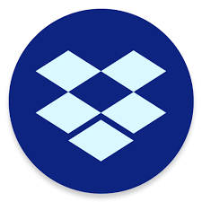
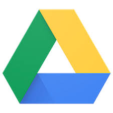
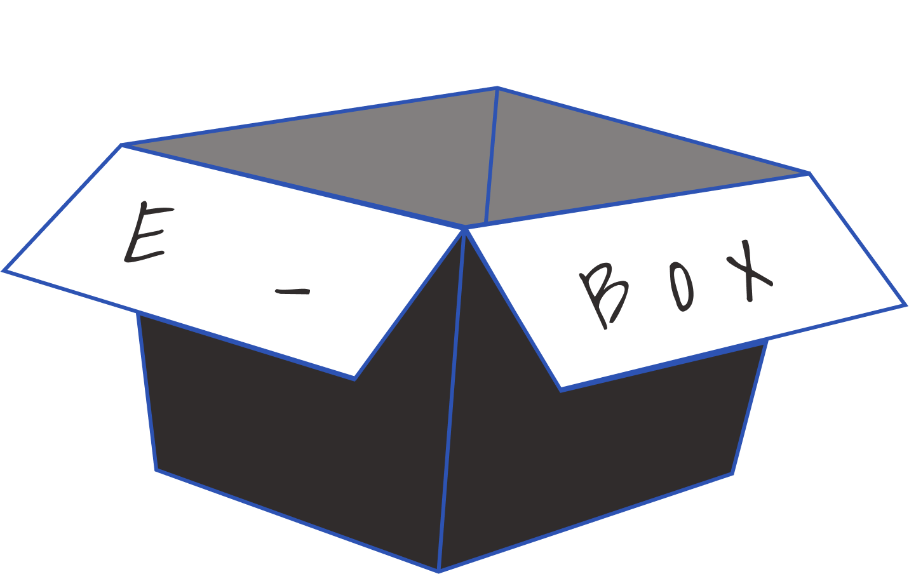
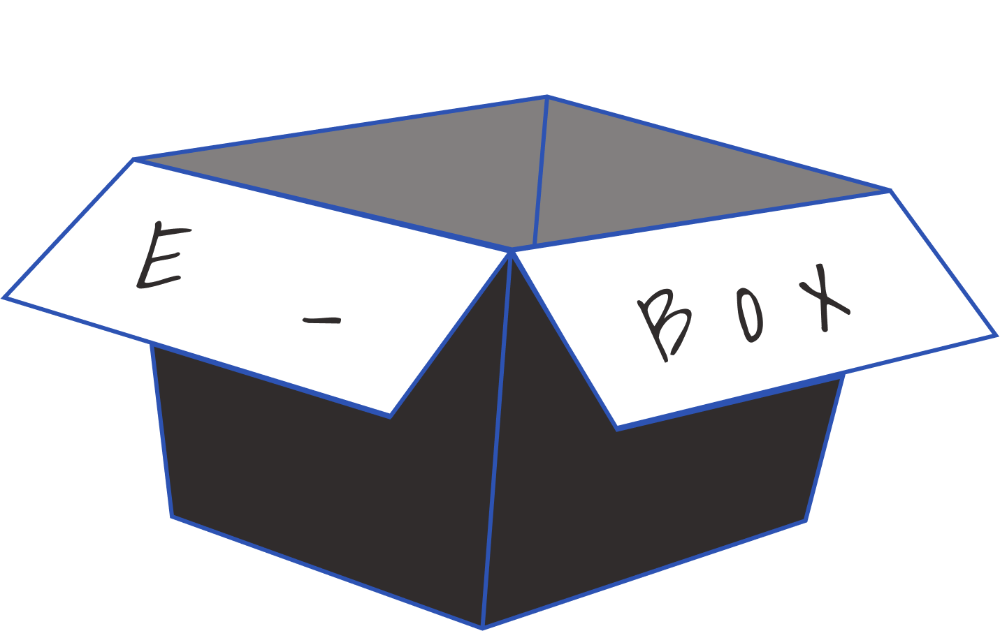

Biography:
Jerry grew up fishing most of his childhood, to this day he finds peace of hearing the sounds of wildlife and running waters. He doesn’t go as often anymore since he now has a newborn child to raise and a lovely wife to take
care of. He says when his newborn is old enough to walk, he will take him fishing at his favorite spot.
Goals:
- To quickly categorize content for searches
- Multiple creations and uploading tools on all devices
- Quickly and easily add files on multiple platforms
Frustrations:
- Features missing on some devices
- Process of editing documents on mobile
- Confusing file sharing and uploading without an account
Motivations:
Jerry currently uses multiple storage platforms to store his personal and work-related files. He needs to create and access his files on his devices as he always needs to access his files where ever he is. Jerry is a very organized
individual and needs all his files to be the same. Sometimes frustration occurs with the process of searching for his files.
Biography:
Fiona’s dream is to travel the world. In the meantime, while she attends her state college for a degree in culinary, she takes her of her 3 kittens. Her life is busy as it gets for a student. Waking up early to prepare for the day, attending
her classes and studying at night. To support herself she creates cooking tutorials on social media.
Goals:
- - To easily share and view groups of images and files
- Automatic file tags or suggestions
- Smoother uploading speed associated with larger files
Frustrations:
- Confusing to integrate stored content with social media
- Time-consuming to organize files
- Glitches when uploading bigger files
Motivations:
Fiona has many recipes to try to memorize, originally everything was written down. Now she has her files on the cloud, which makes her life easier because she can simply open her tablet in the kitchen and start cooking instead of walking
every looking for her papers. She is always on the look for new recipes and when she finds one online she likes to save the link to the cloud.

Strengths:
High user base
Multi-language support
Available on multiple platforms
High awareness among internet users
Simple design & user-friendly interface
Strong financials
Weakness:
Smaller space for free version compared to Google drive
Security of customers data on the cloud is still a concern
Opportunities:
Rapid technological development
Opportunity to expand to new services
Increasing internet penetration and the number of smartphone users
Threats:
Intense competition
Server location issues raised by few governments
Changes in consumer tastes
Availability of substitute products
Security and privacy issues

Strengths:
Integration/API
Collaboration
Creating documents on the browser or mobile device
Included with Google account
Weakness:
Lack of security
Offline access to Google format files only works with Chrome
A bit confusing to locate certain files in certain contexts (mobile)
Fractured experience
Only sync one folder
Branding confusion
Opportunities:
Organize a mobile layout to locate certain files easier
Increase the speed of uploading big files
Need of people sending files
Threats:
Intense Competition
Need rapid updates of functionality
 Strengths:
Strengths:
Professional quality control over docs
Integration (Dropbox)
Weakness:
No collaboration
No auto-save
Only sync one folder
Buggy file handling of MS formats
Clumsy UI (Metro-ish)
Opportunities:
Implement Collaboration
Improve functionality due to bugging issues
Can improve in different routes hard to compete against big named brand
Threats:
Difficult to choose this software over other well-known applications
Security and privacy issues
Intense competition
 
